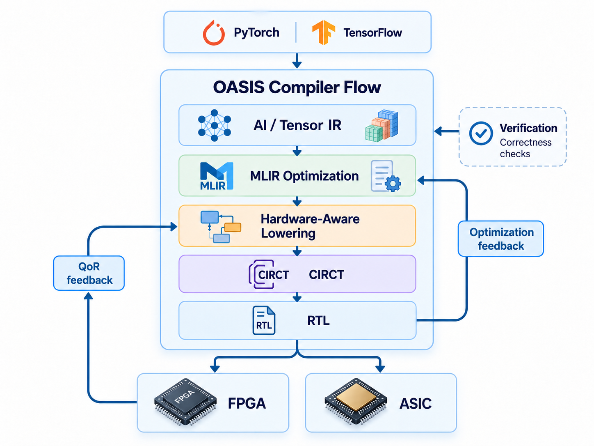

OASIS: Open Infrastructure for Automated Synthesis of AI Models to Hardware
NSF-Funded Research Project | NSF Award #2608702
OASIS is an open, end-to-end cyberinfrastructure for automatically translating modern AI models into efficient FPGA and ASIC hardware. The project builds on MLIR and CIRCT to preserve high-level model and optimization semantics throughout the compilation flow, from machine-learning frameworks to hardware-level representations and synthesizable RTL.
Development & Maintenance: Md Mahfuzul Haque Gazi leads the development and maintenance of the OASIS software pipeline at DAC Lab.
